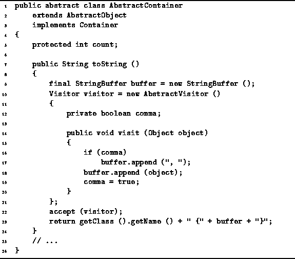

Data Structures and Algorithms
with Object-Oriented Design Patterns in Java
Data Structures and Algorithms
with Object-Oriented Design Patterns in JavaOne of the methods defined in the Java Object class is the toString method. Consequently, every Java object supports the toString method. The toString method is required to return a string that represents the object ``textually.'' It is typically invoked in situations where it is necessary to print out the representation of an object.
Program  defines the toString method
of the AbstractContainer class.
This method is provided to simplify the implementation of classes derived
from the AbstractContainer class.
The default behavior is to print out the name of the class
and then to print each of the elements in the container,
by using the accept method together with a visitor.
defines the toString method
of the AbstractContainer class.
This method is provided to simplify the implementation of classes derived
from the AbstractContainer class.
The default behavior is to print out the name of the class
and then to print each of the elements in the container,
by using the accept method together with a visitor.

Program: AbstractContainer class toString method.
The toString method makes use of a StringBuffer to accumulate the textual representations of the objects in the container. A Java string buffer is like a Java String, except it can be modified. In particular, the StringBuffer class defines various append methods that can be used to append text to the buffer.
In this case, we use a visitor to do the appending. That is, the visit method appends to the string buffer the textual representation of every object that it visits. (It also makes sure to put in commas as required).
The final result returned by the toString method consists
of the name of the container class,
followed by a comma-separated list of the contents of that container
enclosed in braces { and }.
 Copyright © 1998 by Bruno R. Preiss, P.Eng. All rights reserved.
Copyright © 1998 by Bruno R. Preiss, P.Eng. All rights reserved.